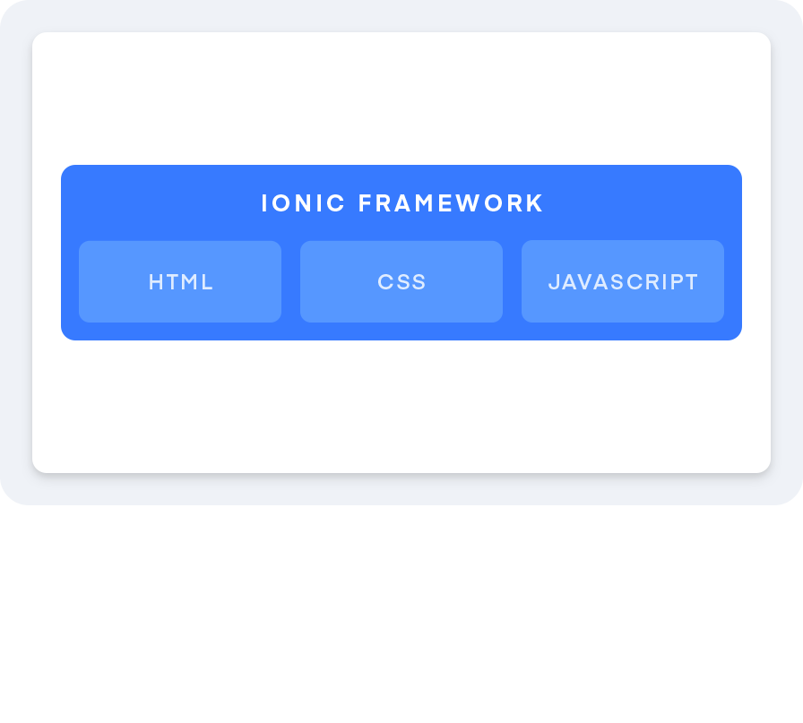
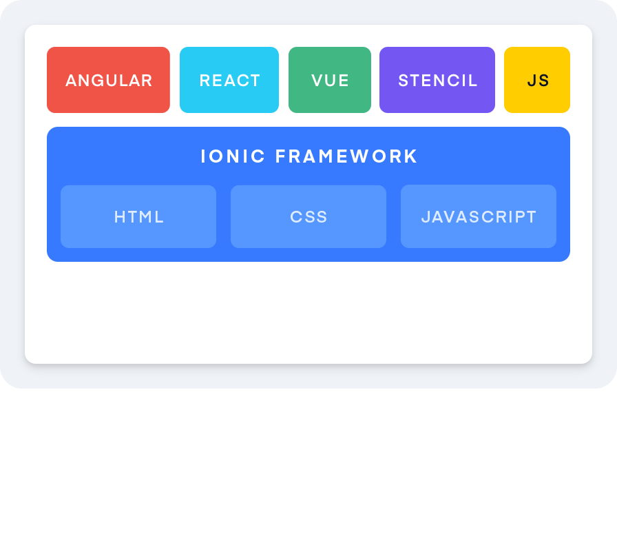
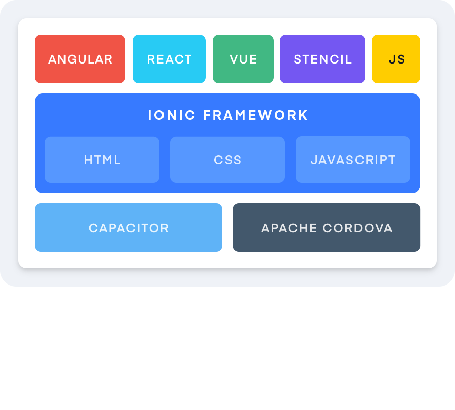
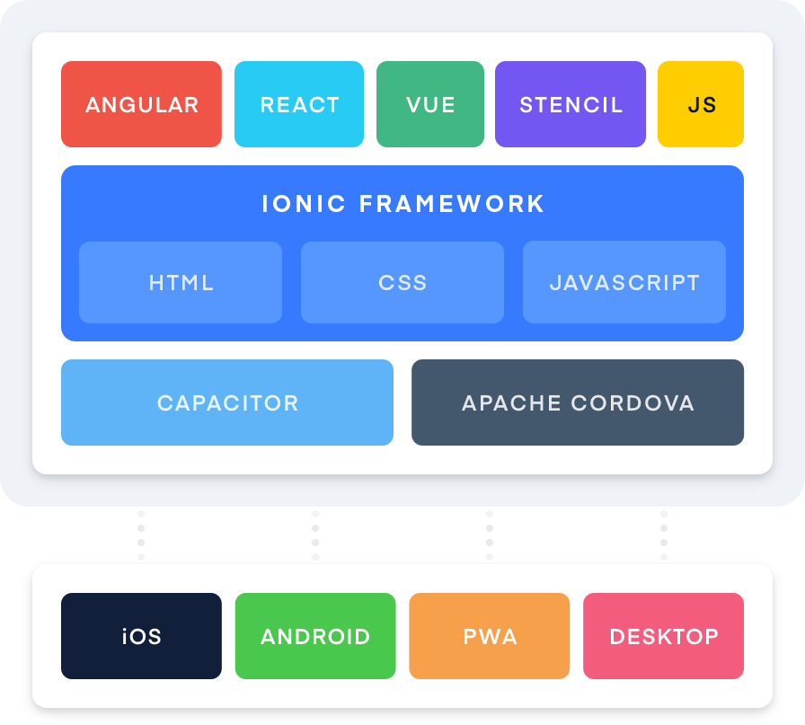

A Vue from Ionic
About Me
- Senior Developer at Ionic
- Ionic Open Source core team member
- Organizer of MadJS
Why I like Vue
- Documentation
- Robust toolchain
- Batteries Included (as you wish)
- TypeScript Support
A Vue from Ionic
What is Ionic?




What is Ionic?
- 5M + Apps created
- 30K+ Stack Overflow Questions
- 100+ Meetups
- Open Source and MIT licensed
- Collection of over 100 components
- Cross-platform apps with a single codebase
- Use a native bridge for device apis
When should you use Ionic?
- You are building a mobile app
- You are building a PWA / web app
- You are building an desktop app
The JS ecosystem is changing
- "Which framework do you prefer?"
- Ionic components should work with any framework or with no framework
Ionic and Vue
Ionic and Vue
- Approachable
- Performant
- Excellent Documentation
- Start with a little or a lot
- Created by
- PWA: beep.modus.app
- Repo: https://github.com/ModusCreateOrg/beep
@ionic/vue 🎉
(alpha)
@ionic/vue
import Vue from 'vue';
import Ionic from '@ionic/vue';
Vue.use(Ionic);
new Vue({
router,
store,
render: h => h(App)
}).$mount('#app');
@ionic/vue components
Satellite
Terrain
Traffic
Live Coding with Alpha
Next Steps
- Community Testing
- Update Documentation
Thank You!